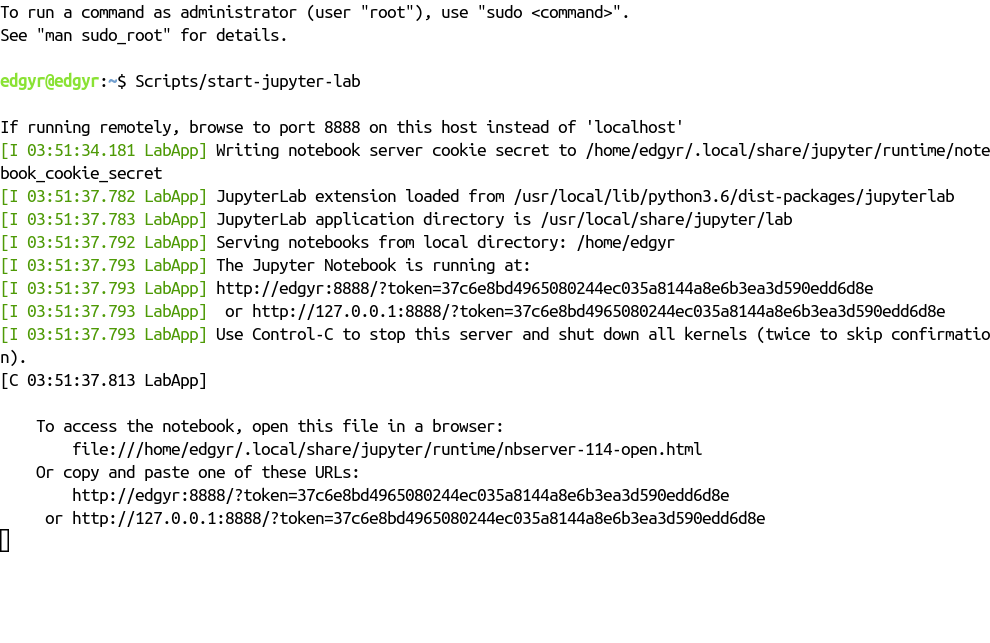
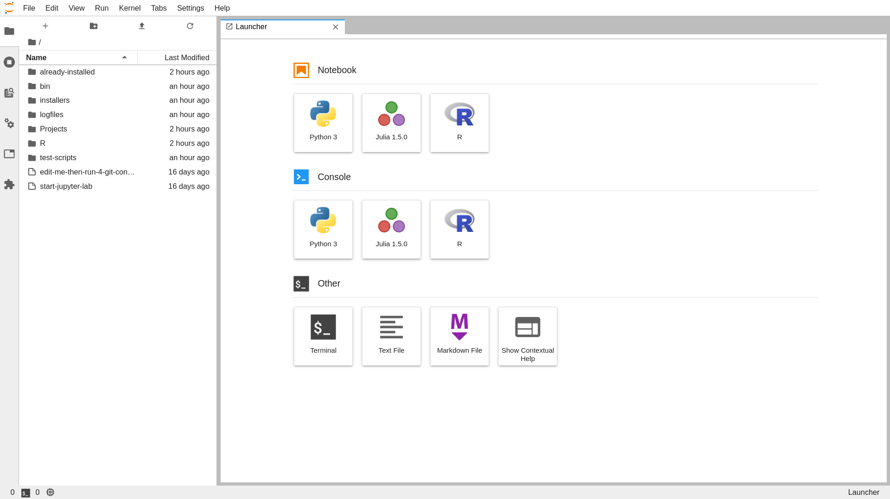

Chapter 8 Using JupyterLab
8.1 Starting JupyterLab
The edgyr-ml image inherits JupyterLab18 from the NVIDIA
l4t-ml image.19 As a result, all that necessary to use
JupyterLab is to add the Julia and R kernels a script to start up the service.
The IJulia package20 provides the Julia kernel and the IRkernel
package21 provides the R kernel. The startup script is
/home/edgyr/Scripts/start-jupyter-lab.
- Browse to the RStudio Server either from the host console or remotely and open the ‘Terminal’ pane.
- Type
Scripts/start-jupyter-lab. You’ll see

If you’re on the Nano console, you just need to copy and paste the http link
into a browser tab and you’ll be in the JupyterLab front page. If you’re
connected remotely, copy the http://edgyr link, but replace edgyr with the
IP address of your Docker host. For example, mine is 192.168.254.23:

To stop the JupyterLab server, press Control-C twice as shown above. As with
RStudio Server and R packages, I strongly recommend putting your notebooks in
projects in the Projects directory and collaborating via Git / GitHub.